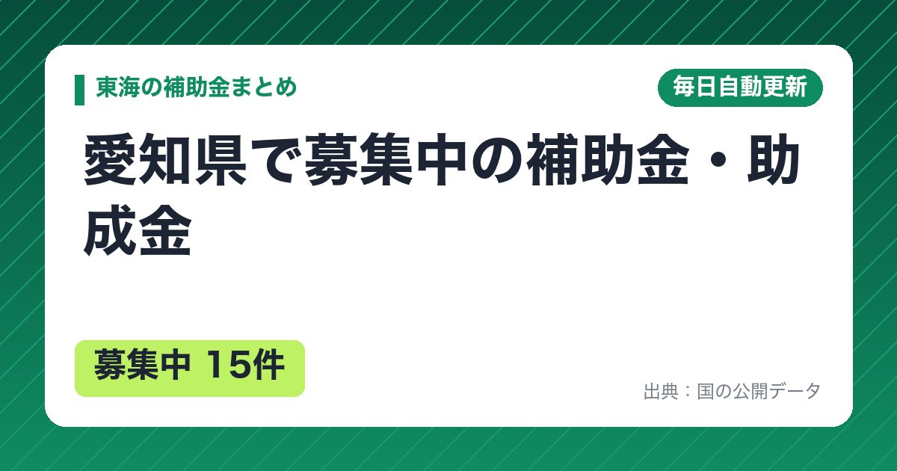

愛知県で募集中の補助金・助成金まとめ

🔔 締切を見逃さない（無料）：愛知県の補助金の締切をカレンダーに追加（iPhone・Googleカレンダー。締切の7日前に通知）／新着をRSSで受け取る
今申し込める15件を締切が近い順に表示
広告補助金の申請には決算書・帳簿が必要です。会計ソフト・開業の手続きの例：
・やよいの青色申告オンライン  （個人事業主の確定申告に）
（個人事業主の確定申告に）
・無料の確定申告自動化ソフト マネーフォワード クラウド確定申告  （確定申告をかんたんに）
（確定申告をかんたんに）
・無料の会計自動化ソフト マネーフォワード クラウド会計  （法人・個人の会計を自動化）
（法人・個人の会計を自動化）
・補助金なら、パソコンとセットでお得に導入【freee会計】  （補助金を使う導入プランあり・詳細は公式で）
（補助金を使う導入プランあり・詳細は公式で）
・開業届作成するなら【弥生のかんたん開業届】  （創業補助金の前に個人で開業する方へ）
（創業補助金の前に個人で開業する方へ）
・会社設立を無料で始めるなら【弥生のかんたん会社設立】  （法人を作る方へ）
（法人を作る方へ）
広告